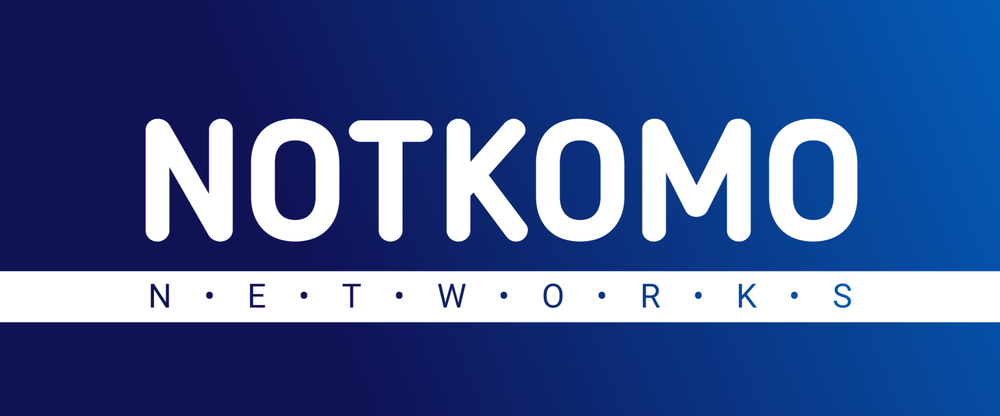

NOTKOMO NETWORKS es un espacio creativo que alberga diversos proyectos, todos enfocados en la visión del fundador Angel Cruger. En este espacio se detallan las bases de diferentes trabajos creativos, personales y profesionales que se han realizado como Angel Curiosidades (y la recopilación de las notas) que ahora tienen un espacio en la sección de noticias de esta página (en construcción debido a la cantidad de artículos que superan las 100 entradas, esperamos organizar mejor todo y que se agrupen de la mejor manera), así como datos de EDC MEDIOS, EDC EL DATO CURIOSO, RIGATHZ, y la famosa sala de diseño donde surgieron todas las ideas que han transformado espacios e historias como Las crónicas de Arthelion, Ryker entre dos mundos, God, Devil and Me (Universo GDM) entre muchos otros, hablamos de ONESTUDIO (Nombre dado al espacio donde conviven todas las historias, personajes y proyectos dentro del espacio de NOTKOMO NETWORKS).
NOTKOMO NETWORKS es un medio de difusión principal y Estudio Creativo para presentar de manera formal las diferentes etapas de proyectos, se busca más que nada generar una base documental de la información para que no solo viva en un repositorio en páginas distintas a través de la red, sino que permita explorar el mundo de cada espacio dedicado a la imaginación del creador, desde 2020 este espacio ha buscado traer esa visión, y como hemos visto con proyectos que aumentan su cercanía con el público, como la mascota oficial y personaje dedicado de la sección, Red Rainbow forma ya parte de este universo creativo.
Gracias por visitar este espacio, no olvides que seguimos trabajando para que todas las etapas creativas tengan un solo ecosistema por lo que el sitio está actualmente en fase de mantenimiento¡
¿Quieres ver más actualizaciones?
Continúa leyendo todas nuestras publicaciones, avisos, curiosidades y notas directamente en nuestro muro principal.
IR A LA SECCIÓN DE NOTICIAS